Conda: environments and software
Nathan M. Muncy
2026-05-06
Purpose
- Knowledge: Learn to build and manage environments
- Skill:
- Activate conda
- Build and manage environments
- Save and remove environments
- Why:
- Manage software version dependencies
- Work within a consistent environment
Need for conda
- Research involves specific software
- As software develops, new versions function differently
- Software suites often call on other suites
- Software version can have specific hardware requirements
- Together, a chance for dependency hell
- Projects take years:
- Need to hold versions constant for on-going projects
- Need to use newer versions for new projects
- Replication dependent on specific software versions
- Conda is a package and environment manager
- Build environments with specific software versions
Conda on the CRC
- Conda is provided as a
moduleon the CRC- See here for their documentation
- Find module via
module avail | grep conda
- Activate conda via:
module load condaconda initsource ~/.bashrc- Why use
sourceinstead of./?
- Why use
module unload conda
- Verify via
conda info
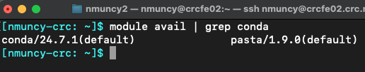
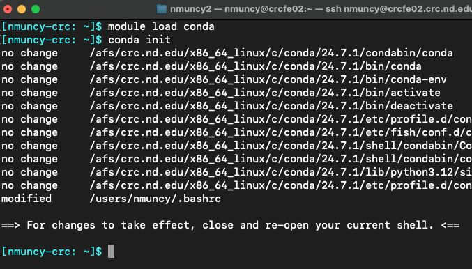
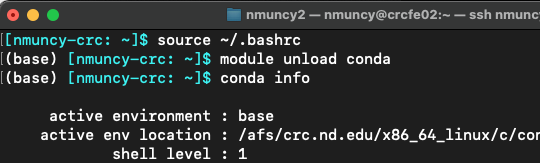
Named environments
- Environments can be named
- Purposes (e.g. python3.8, r4.1)
- Projects (e.g. rest_fmri, proj_name)
- Use conda by envoking command
condaand supply arguments conda create -n test_name: build named environment test_name- Note the build location in
~/.conda
- Note the build location in
conda env list: see available environmentsconda activate test_name: activate test_name enironmentconda deactivate: exits environment
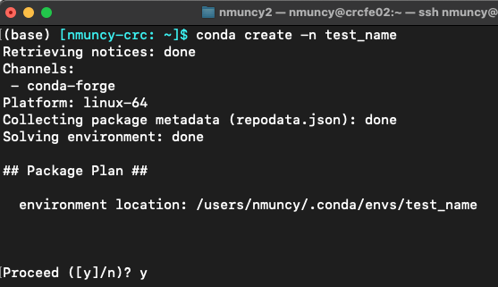
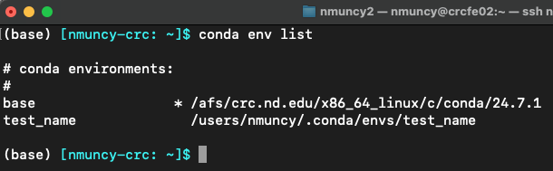
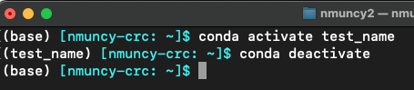
Prefix (path) environments
- All named envs have paths
- Possible to make only prefixed (path) envs
- Save env to specific location
- Make env available to other users (e.g. RAs)
conda create -p ~/test_path- Note:
- the build location
- Absence of a name
- Activate by path
- Tip: add
env_prompt: '({name})'to .condarc to only see the name of env (and not full path)
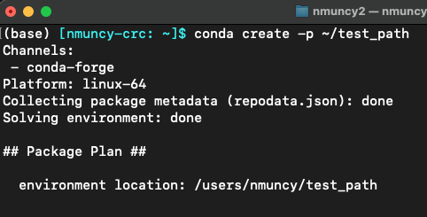
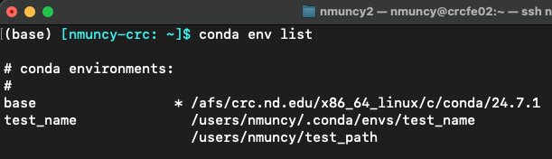
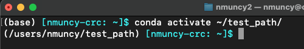
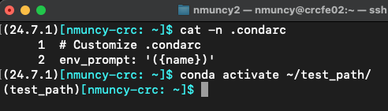
Installing packages
conda list: show packages installed in current envconda install: install specific package name- Default is to search for package at conda-forge
conda install -c conda-forge python=3.10: install python version 3.10 from conda-forge repository into current env- Note: strength of conda - also installs dependencies!
- And manages versions if conflicts arise
- Only when installed through
conda, not other package managers (e.g.pip)
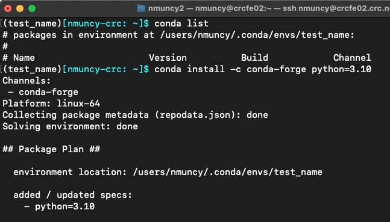
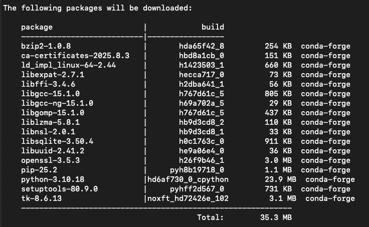
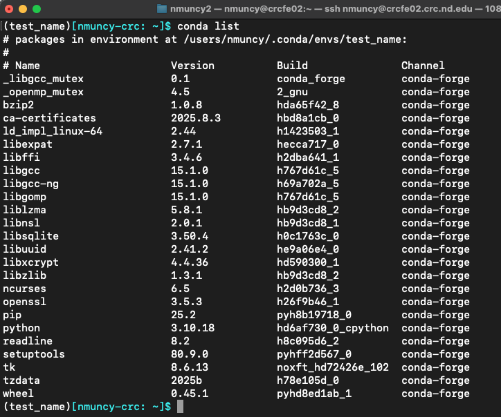
Multiple environments
- Environments do not conflict with each other
- Separate environments allow for separate software versions
- Applicable to Python, R, Java, C, C++, and others
- Useful for differing projects!
- Recommendation: one environment per project
- Allows to lock in versions
- Enables newer versions for newer projects
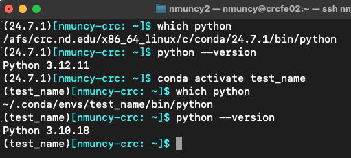
Exporting environments
- Saving environment:
- Backup
- Share with collaborators
- Add to code repository
conda env export > env_name.yml: save environment as YAML file- Preferred method
conda list --explicit > env_name.txt: save environment sources as text file- Not as robust
- Environments can be built from files using the
-foption (see here)
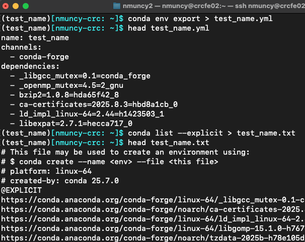
Deleting environments
- Clean unused environments
- Can always rebuild from backup file
- (Assuming versions work on hardware or OS version)
- Removal is similar to creation
conda env remove -n test_name: remove named env test_nameconda env remove -p ~/test_path: remove previx env test_path
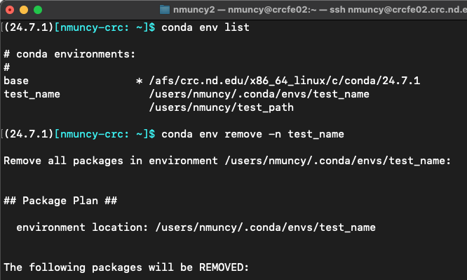
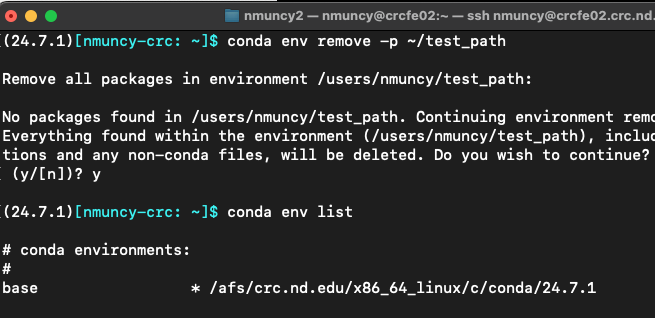

Productivity: conda